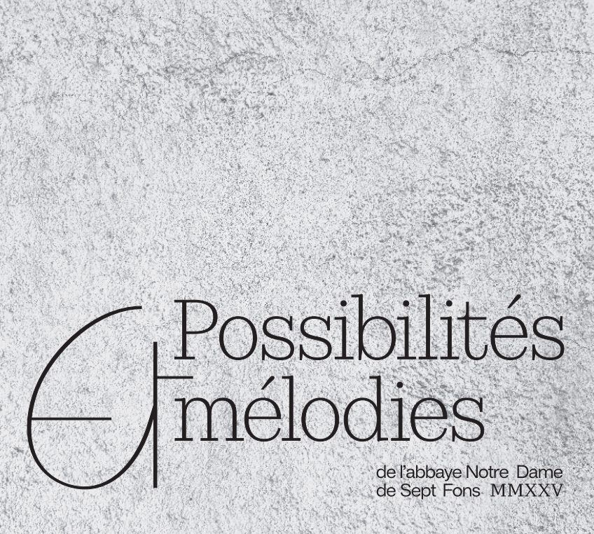
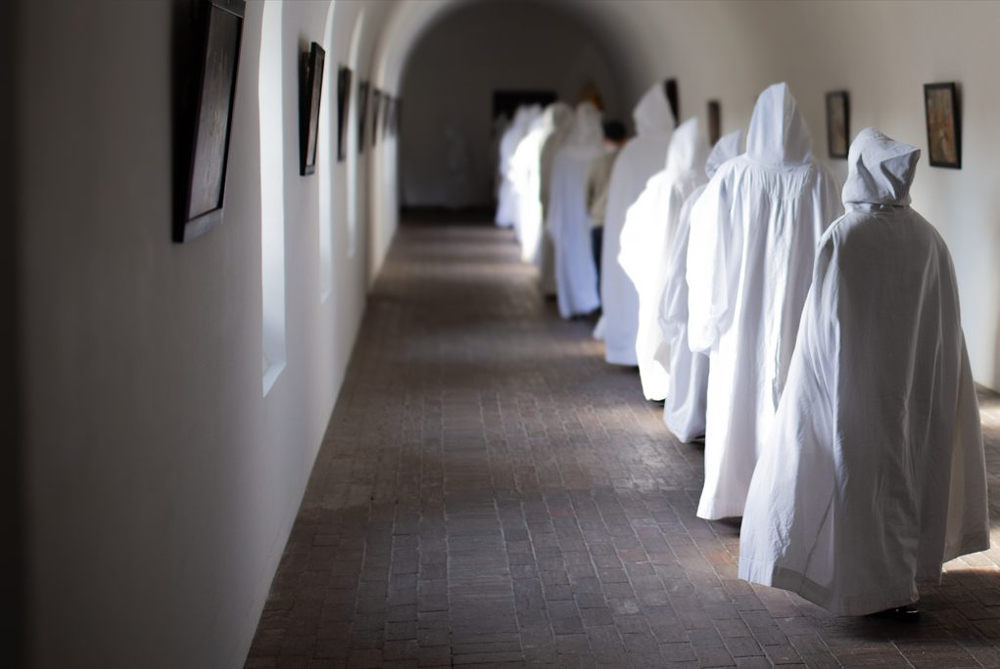

Notre album est disponible au magasin de l’abbaye ou
Ce disque offre un aperçu d’une journée monastique solennelle vécue à l’abbaye de Sept-Fons. Du premier appel des Matines jusqu’au Salve Regina, au seuil de la nuit, le chant grégorien et la musique instrumentale s’unissent pour célébrer Celui qui est au cœur de notre vie, source de toutes possibilités et de toutes mélodies.
Découvrir le contenu du disque
Matines et Laudes – La Messe – Intermezzo –
Vêpres et Complies – Postlude
Durée totale : 79 min 56 s

La couverture du CD met en avant un motif graphique inspiré d’une ancienne forme de la ligature latine « et » (le signe « & »). Utilisé depuis l’Antiquité, ce symbole relie non seulement les deux mots du titre, mais évoque aussi le lien entre passé et présent que porte cet enregistrement. En arrière-plan, une photographie d’un mur de l’abbaye rappelle le lieu et renforce l’idée d’une continuité à travers les âges.